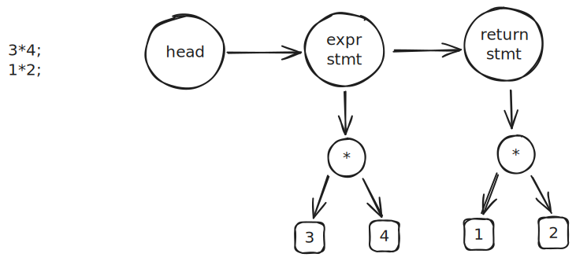
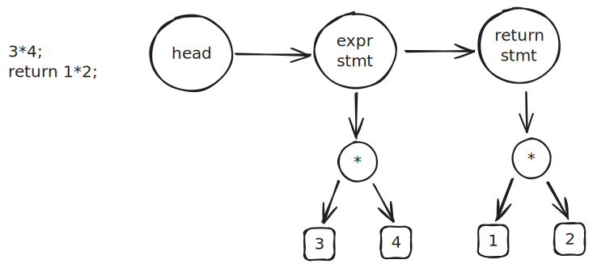

一元运算符
一元运算符(只有一个操作数), 如 +1，-1
- 支持一元运算符号即拓展 primary 的内容，即存在 unary = （"+" | "-"）unary | primary
注意，+ 一元运算符不会对结果有任何影响，因此实现时，仅需考虑 - , 故语法分析遇到一元运算符 + 跳过即可
词法分析
+/-本身能够识别，无需增加
语法分析
新的算式形式语言
- mul 之后的 + | - 被认为是常规运算符
// expr = mul ("+" mul | "-" mul)*
// mul = unary ("*" unary | "/" unary)*
// unary = ("+" | "-") unary | primary
// primary = "(" expr ")" | num
// unary = ("+" | "-") unary | primary
static Node *unary(Token **rest, Token *token) {
// + 一元运算符无影响，跳过即可
// unary无论如何都会调用 primary 进行 rest 的设置
// 因此递归调用 unary 时，传入 rest 即可
// 否则则需要在最后手动设置 rest
if (equal(token, "+")) {
return unary(rest, token->next);
}
if (equal(token, "-")) {
return new_node_unary(ND_NEG, unary(rest, token->next));
}
return primary(rest, token);
}
语义分析
对于 ND_NEG 节点，递归直到遇到数字，将数字加载到 a0 之后，增加-数量的 neg 指令即可
static void gen_code(Node *node) {
// 若根节点为数字(叶子节点), 则只加载到 a0 寄存器中
if (node->kind == ND_NUM) {
}
switch (node->kind) {
case ND_NUM:
printf(" li a0, %d\n", node->val);
return;
case ND_NEG:
// 一元运算符子为单臂二叉树，子节点保留在右侧
// 因此向右递归直到遇到数字
gen_code(node->rhs);
printf(" neg a0, a0\n");
return;
default:
break;
}
关系运算符
支持 == != <= >=
词法分析
增加read_punct函数，读取运算符并返回长度
int punct_len = read_punct(p);
if (punct_len) {
cur->next = new_token(TK_PUNCT, p, p + punct_len);
cur = cur->next;
p += punct_len;
continue;
}
语法分析
表达式形式语言修改
// expr = equality
// equality = relational ("==" relational | "!=" relational)*
// relational = add ("<" add | "<=" add | ">" add | ">=" add)*
// add = mul ("+" mul | "-" mul)*
// mul = unary ("*" unary | "/" unary)*
// unary = ("+" | "-") unary | primary
// primary = "(" expr ")" | num
因此需要增加 equality 与 relational
- 存在 ND_LT 和 ND_NE 存在的情况下，不需要 ND_GT 和 ND_GE, 因为 lhs 和 rhs 位置就代表了一种意义
while (true) {
if (equal(token, "==")) {
node = new_node_bin(ND_EQ, node, relational(&token, token->next));
continue;
}
if (equal(token, "!=")) {
node = new_node_bin(ND_NE, node, relational(&token, token->next));
continue;
}
break;
}
语义分析
使用 xor, seqz, snez, slt, xori 指令来实现比较
xor若两数相等，则值为 0, 因此可以通过判断是否为0来判断是否相等, 利用 seqz 与 snez 指令slt判断是否小于, 小于等于则等同于不大于，利用 slt 与取反来实现
case ND_EQ:
case ND_NE:
printf(" xor a0, a0 ,a1\n");
if (node->kind == ND_EQ) {
// a0 = 1 if a0 = 0
printf(" seqz a0, a0\n");
} else {
// a0 = 1 if a0 != 0
printf(" snez a0, a0\n");
}
return;
case ND_LT:
printf(" slt a0, a0, a1\n");
return;
case ND_LE:
// a0 <= a1 == !(a1 < a0) == (a1 < a0) xor 1
printf(" slt a0, a1, a0\n");
printf(" xori a0, a0, 1\n");
return;
支持多段
支持 ; 分割多段表达式，每段都编译，执行时只有最后一段结果保留

词法分析
; 包含在标点符号中，不必修改
语法分析
在原有的语法树的基础上，扩充对多个语段的支持， 在 Node 结构体中增加 next 字段, 指向不同的语段
struct Node {
NodeKind kind;
Node *next;
Node *lhs;
Node *rhs;
int val;
};
更新形式语言
// program = stmt*
// stmt = expr_stmt
// expr_stmt = expr ";"
// expr = equality
// equality = relational ("==" relational | "!=" relational)*
// relational = add ("<" add | "<=" add | ">" add | ">=" add)*
// add = mul ("+" mul | "-" mul)*
// mul = unary ("*" unary | "/" unary)*
// unary = ("+" | "-") unary | primary
// primary = "(" expr ")" | num
expr_stmt中将语法树挂载 rhs上
static Node *expr_stmt(Token **rest, Token *token) {
Node *node = new_node_unary(ND_EXPR_STMT, expr(&token, token));
*rest = skip(token, ";");
return node;
}
stmt 节点的 next 指向下一个 stmt
Node *parse(Token *token) {
Node head = {};
Node *cur = &head;
while (token->kind != TK_EOF) {
cur->next = stmt(&token, token);
cur = cur->next;
};
return head.next;
}
语义分析
增加对于 ND_EXPR_STMT 类型的 Node 的解析
static void gen_stmt(Node *node) {
if (node->kind == ND_EXPR_STMT) {
gen_expr(node->rhs);
return;
}
error("invalid statement");
}
void codegen(Node *node) {
printf(" .globl main\n");
printf("main:\n");
for (Node *n = node; n; n = n->next) {
gen_stmt(n);
assert(STACK_DEPTH == 0);
}
printf(" ret\n");
}
支持单字母本地变量
本地变量是一种新的token，需要增加token种类
本地变量代表的是内存地址，支持单字母本地变量需要为变量计算内存地址
变量是一种新的节点，赋值语句是一种新的语法，需要增加赋值语句节点
赋值是一种新的语法，需要新的语义分析，同时还需要支持 a=b=c=1的递归赋值

词法分析
单字母对应[a,z], 增加相应的字符判断即可，同时增加 ident token种类
语法分析
更新形式语言
// program = stmt*
// stmt = expr_stmt
// expr_stmt = expr ";"
// expr = assign
// assign = equality ("=" assign)?
// equality = relational ("==" relational | "!=" relational)*
// relational = add ("<" add | "<=" add | ">" add | ">=" add)*
// add = mul ("+" mul | "-" mul)*
// mul = unary ("*" unary | "/" unary)*
// unary = ("+" | "-") unary | primary
// primary = "(" expr ")" | ident｜ num
递归 assign 实现
// assign = equality ("=" assign)?
static Node *assign(Token **rest, Token *token) {
Node *node = equality(&token, token);
// a=b=1;
if (equal(token, "="))
node = new_node_bin(ND_ASSIGN, node, assign(&token, token->next));
*rest = token;
return node;
}
primary 中增加对于 ident 解析
语义分析
栈布局
//-------------------------------// sp
// fp fp = sp-8
//-------------------------------// fp
// 'a' fp-8
// 'b' fp-16
// ...
// 'z' fp-208
//-------------------------------// sp=sp-8-208
// 表达式计算
//-------------------------------//
地址计算
// 计算给定节点的内存地址
static void gen_addr(Node *node) {
if (node->kind == ND_VAR) {
int offset = (node->name - 'a') * 8;
printf(" addi a0, fp, %d\n", -offset);
return;
}
error("not an lvalue");
}
assign 语义
case ND_ASSIGN:
// 左值
gen_addr(node->lhs);
push();
// 右值
gen_expr(node->rhs);
// 栈上保存的是左值内存地址, 弹出到 a1 寄存器
pop("a1");
printf(" sd a0, 0(a1)\n");
return;
同时也增加了 sp 与 fp 的保存与恢复
printf(" addi sp, sp, -8\n");
printf(" sd fp, 0(sp)\n");
// 将当前的 sp 设置为 fp
printf(" mv fp, sp\n");
// 恢复 sp
printf(" mv sp, fp\n");
// 恢复上一个 fp
printf(" ld fp, 0(sp)\n");
printf(" addi sp, sp, 8\n");
支持多字母本地变量
本地变量名称满足 [a-zA-Z_][a-zA-Z0-9_]*
- 增加 Object 结构体用来保存本地变量
- 增加 Function 结构体用来指示代码
struct Object {
Object *next;
char *name; // 变量名称
int offset; // 相对栈顶的偏移量
};
struct Function {
Node *body; // 函数体(AST)
Object *locals; // 本地变量链表头
int stack_size; // 栈大小
};
词法分析
首先需要判断字符是否为 变量名称头，其次还要判断剩余部分是否符合剩余部分的规范，最后再构成token
语法分析
parse返回值变为 Funcion， 因此需要生成好 body 与 locals
- 生成 body 的逻辑几乎无变化
- locals 在生成的过程中变化，下降到 primary 时，如发现是一个 ident token，则首先遍历 locals 中是否已经有同名 Node， 否则则创建一个并加入到 locals 中
// 变量实例均保存在全局的 LOCALS 链表中
Object *LOCALS;
// 创建以 Local 变量，并头插到 LOCALS 中
static Object *new_local_var(char *name) {
Object *var = calloc(1, sizeof(Object));
var->name = name;
// 头插法
var->next = LOCALS;
LOCALS = var;
return var;
}
// 寻找 LOCALS 中是否有与 ident token 同名的变量
static Object *find_var_by_token(Token *token) {
for (Object *var = LOCALS; var; var = var->next) {
// 简单判断 -> 负载判断, 提升效率
if (strlen(var->name) == token->len &&
!strncmp(token->loc, var->name, token->len))
return var;
}
return NULL;
}
语义分析
更新后的栈布局
// 栈布局
//-------------------------------// sp
// fp
//-------------------------------// fp = sp-8
// 变量
//-------------------------------// sp = sp-8-StackSize
// 表达式计算
//-------------------------------//
为 prog 中的变量设置栈空间
static void assign_local_val_offsets(Function *prog) {
int offset = 0;
for (Object *var = prog->locals; var; var = var->next) {
offset += 8;
var->offset = -offset;
}
prog->stack_size = align_to(offset, 16);
}
// 计算给定节点的内存地址
static void gen_addr(Node *node) {
// var 为指针，在 prog 中被修改后，同时也保存在 Node 中
if (node->kind == ND_VAR) {
printf(" addi a0, fp, %d\n", node->var->offset);
return;
}
error("not an lvalue");
}
注意
#define _POSIX_C_SOURCE 200809L, 才能够正常使用strndup函数
支持 return

词法分析
return 作为一种特殊的 ident，在完成token的初步生成之后，再对符合 keyword 的token 进行标记
// 将符合关键字的 token 类型修改为 TK_KEYWORD
static void convert_keywords(Token *token) {
for (Token *t = token; t; t = t->next) {
if (equal(t, "return")) {
t->kind = TK_KEYWORD;
}
}
}
语法分析
形式语言中修改 stmt 的表达， 注意 "return" expr ";" 与 expr_stmt 位于统一级别
// stmt = "return" expr ";"| expr_stmt
增加一个 return node，return stmt
static Node *stmt(Token **rest, Token *token) {
if (token->kind == TK_KEYWORD && equal(token, "return")) {
Node *node = new_node_unary(ND_RETURN, expr(&token, token->next));
*rest = skip(token, ";");
return node;
}
return expr_stmt(rest, token);
}
语义分析
在程序末尾增一个 return 标签，而 return node 则会跳转到此 label
static void gen_stmt(Node *node) {
if (node->kind == ND_EXPR_STMT) {
gen_expr(node->rhs);
return;
}
switch (node->kind) {
case ND_EXPR_STMT:
gen_expr(node->rhs);
return;
case ND_RETURN:
gen_expr(node->rhs);
printf(" j .L.return\n");
return;
default:
break;
}
error("invalid statement");
}
支持代码块

词法分析
{ | } 本身就是符号，无需进行修改
语法分析
增加 ND_Block 节点，修改推导式，同时约定每个 Funcion 必须从 ND_Block 开始
// program = "{" compoundStmt
// compoundStmt = stmt* "}"
// stmt = "return" expr ";"| "{" compoundStmt | expr_stmt
增加 ND_Block 的处理
// compoundStmt = stmt* "}"
PARSER_DEFINE(compound_stmt) {
Node head = {};
Node *cur = &head;
while (!equal(token, "}")) {
cur->next = stmt(&token, token);
cur = cur->next;
}
Node *node = new_node(ND_BLOCK);
node->body = head.next;
*rest = token->next;
return node;
}
// stmt = "return" expr ";"| "{" compoundStmt | expr_stmt
PARSER_DEFINE(stmt) {
if (token->kind == TK_KEYWORD && equal(token, "return")) {
Node *node = new_node_unary(ND_RETURN, expr(&token, token->next));
*rest = skip(token, ";");
return node;
}
if (equal(token, "{")) {
return compound_stmt(rest, token->next);
}
return expr_stmt(rest, token);
}
语义分析
ND_Block 也是 stmt， 同时也可以嵌套
static void gen_stmt(Node *node) {
switch (node->kind) {
case ND_EXPR_STMT:
gen_expr(node->rhs);
return;
case ND_RETURN:
gen_expr(node->rhs);
printf(" j .L.return\n");
return;
case ND_BLOCK:
for (Node *n = node->body; n; n = n->next) {
gen_stmt(n);
}
return;
default:
break;
}
error("invalid statement");
}
允许空语句
词法分析
允许 expr 为空
// expr_stmt = expr? ";"
发现空 stmt 时，返回空 ND_BLOCK 即可
PARSER_DEFINE(expr_stmt) {
if (equal(token, ";")) {
*rest = token->next;
return new_node(ND_BLOCK);
}
Node *node = new_node_unary(ND_EXPR_STMT, expr(&token, token));
*rest = skip(token, ";");
return node;
}
支持 if 语句
词法分析
增加 if 关键字
static char *keywords[] = {"return", "if", "else"};
// 判断 ident token 是否在 keywords 中
static bool is_keyword(Token *token) {
for (int i = 0; i < sizeof(keywords) / sizeof(*keywords); i++) {
if (equal(token, keywords[i])) {
return true;
}
}
return false;
}
语法分析
推导式增加
// stmt = "return" expr ";"|
// "{" compoundStmt |
// expr_stmt |
// "if" "(" expr ")" stmt ("else" stmt)?
增加 node_if， 并扩充 Node 中的成员 cond, then, else
// 解析 if 语句
if (equal(token, "if")) {
Node *node = new_node(ND_IF);
token = skip(token->next, "(");
node->cond = expr(&token, token);
token = skip(token, ")");
node->then = stmt(&token, token);
if (equal(token, "else"))
node->els = stmt(&token, token);
*rest = token;
return node;
}
语义分析
对于 ND_IF 的节点，汇编的模板格式如下, 首先生成 condition expr, 随后插入一条 beqz 指令判断是否要跳转到 else
// condition expr
// beqz to else label
// then stmt
// else label:
// else stmt
// end label:
当存在多个 if 时， 需要通过 c 标记来区别不同的label
case ND_IF: {
int c = count();
// condition
gen_expr(node->cond);
// a0为0则跳转到 else
printf(" beqz a0, .L.else.%d\n", c);
// then 逻辑
gen_stmt(node->then);
// 跳转到 if 语句末尾
printf(" j .L.end.%d\n", c);
// else 逻辑
printf(".L.else.%d:\n", c);
if (node->els)
gen_stmt(node->els);
// end 标签
printf(".L.end.%d:\n", c);
return;
支持 for 语句
词法分析
增加 for 关键字
语法分析
推导式增加
增加 node_for， 并扩充 Node 中的成员 init, inc, 即 for init cond inc
语义分析
对于 ND_FOR 的节点，汇编的模板格式如下
// init stmt
// begin label:
// condition expr
// beqz to end label
// then stmt
// inc expr
// j to cond label
// end label:
支持 while 语句
while 语句就是只用 cond 和 then 的 for 循环语句
支持一元&*运算
词法分析
支持 * & 两种符号， 而考虑到 tokenize 本身就能够解析符号，因此不必在 tokenize 阶段做修改
语法分析
与 - 类似，单臂节点中增加了 * & 两种类型的节点， 因此推导式修改为
// unary = ("+" | "-" | "*" | "&") unary | primary
相应地在 unary 中也要增加处理逻辑
// unary = ("+" | "-" | "*" | "&") unary | primary
PARSER_DEFINE(unary) {
// + 一元运算符无影响，跳过即可
// unary无论如何都会调用 primary 进行 rest 的设置
// 因此递归调用 unary 时，传入 rest 即可
// 否则则需要在每次生成新节点后，手动地再设置 rest
// "+" unary
if (equal(token, "+"))
return unary(rest, token->next);
// "+" unary
if (equal(token, "-"))
return new_node_unary(ND_NEG, unary(rest, token->next), token);
// "*" unary
if (equal(token, "*"))
return new_node_unary(ND_DEREF, unary(rest, token->next), token);
// "&" unary
if (equal(token, "&"))
return new_node_unary(ND_ADDR, unary(rest, token->next), token);
return primary(rest, token);
}
语义分析
与 ND_NEG 类似，DEREF 和 ADDR 都在 expr 中进行单独处理
- 注意存在嵌套解引用的情况，因此 DEREF 单臂所指向的也可能是一个 DEREF 节点，因此需要递归处理
- 取地址不存在嵌套，但存在对一个解引用的expr进行取地址的情况，因此在计算地址时需要单独处理
case ND_ADDR:
// 计算单臂指向的变量的地址，保存到 a0 中
gen_addr(node->rhs);
return;
case ND_DEREF:
// 解引用向右递归
gen_expr(node->rhs);
printf(" # 读取 a0 中间接引用的值，存入到 a0中\n");
printf(" ld a0, 0(a0)\n");
static void gen_addr(Node *node) {
switch (node->kind) {
case ND_VAR: // Object var 为指针, 在 prog 中被修改后, 同时也能从 Node 访问
printf(" # 获取变量%s的栈内地址为%d(fp)\n", node->var->name,
node->var->offset);
printf(" addi a0, fp, %d\n", node->var->offset);
return;
case ND_DEREF: // 对一个解引用expr进行取地址
gen_expr(node->rhs);
return;
default:
break;
}
error_token(node->token, "not an lvalue");
}
支持指针的算术运算
C中对不同类型的指针进行计算时，具体运算的值取决于类型, 以此为目标，则需要让编译器支持类型系统，这一过程在 paser 中完成
- 对于每个Node，增加 Type 字段标识其类型
- 完成 stmt 的 AST 构造后，需要遍历所有的 Node，设置好对应的 Type
类型系统声明
// 类型
typedef enum {
TY_INT, // int整形
TY_PTR, // 指针类型
} TypeKind;
struct Type {
TypeKind kind; // 类型
Type *base; // 类型指针时，所指向的类型
};
// Type int
extern Type *TYPE_INT;
// 判断是否为 Type int
bool is_integer(Type *type);
// 遍历 AST 并为所有 NODE 增加类型
void add_type(Node *node);
词法分析
无新增词法，不必修改
语法分析
expr 结果的类型确定(a0中值的类型)
- ADD、SUB、MUL、DIV、NEG、ASSIGN都与左子节点(单臂)的类型相同
- EQ、NE、LT、LE、VAR、NUM 都设置为 TYPE_INT(当前仅有)
- ADDR为PTR类型，同时base需要由单臂所指向节点的类型来决定
- DEREF类型要么是 TYPE_INT, 要么根据单臂所指向节点的base来决定
// 遍历 AST 并为所有 expr NODE 增加类型
void add_type(Node *node) {
if (!node || node->type)
return;
// 递归访问所有的子节点
add_type(node->lhs);
add_type(node->rhs);
add_type(node->cond);
add_type(node->then);
add_type(node->els);
add_type(node->init);
add_type(node->inc);
// 遍历 stmt 链表
for (Node *n = node->body; n; n = n->next)
add_type(n);
switch (node->kind) {
case ND_ADD:
case ND_SUB:
case ND_MUL:
case ND_DIV:
case ND_NEG:
case ND_ASSIGN:
// ADD、SUB、MUL、DIV、NEG、ASSIGN都与左子节点(单臂)的类型相同
node->type = node->lhs->type;
return;
case ND_EQ:
case ND_NE:
case ND_LT:
case ND_LE:
case ND_VAR:
case ND_NUM:
// EQ、NE、LT、LE、VAR、NUM 都设置为 TYPE_INT
node->type = TYPE_INT;
return;
case ND_ADDR:
// 取地址节点的类型根据单臂所指向节点的类型来决定
node->type = pointer_to(node->lhs->type);
return;
case ND_DEREF:
if (node->lhs->type->kind == TY_PTR) // 嵌套解引用
node->type = node->lhs->type->base;
else // 当前只有 INT 数据类型
node->type = TYPE_INT;
return;
default:
break;
}
}
在构造 AST 时，除了需要调用 add_type 来为 Node 增加类型属性意外，对于 ptr 而言， add 和 sub 的处理逻辑也有所不同
Node add 处理方法
- invalid: ptr + ptr
- special: ptr + num | num + ptr -> ptr
// 创建ADD节点
// num | ptr + num | ptr
// 未声明 Type，上层会使类型与 lhs 相同
static Node *new_node_add(Node *lhs, Node *rhs, Token *token) {
add_type(lhs);
add_type(rhs);
// num + num
if (is_integer(lhs->type) && is_integer(rhs->type)) {
return new_node_bin(ND_ADD, lhs, rhs, token);
}
// ptr + ptr
// invalid
if (lhs->type->base && rhs->type->base)
error_token(token, "invalid operands");
// num + ptr
// change to ptr + num
if (!lhs->type->base && rhs->type->base) {
Node *temp = lhs;
lhs = rhs;
rhs = temp;
}
// 将 ptr + num 转化为 ptr + (num * 8) 从而计算地址
rhs = new_node_bin(ND_MUL, rhs, new_node_num(8, token), token);
return new_node_bin(ND_ADD, lhs, rhs, token);
}
Node sub 处理方法
- invalid: num - ptr
- special
- ptr - num -> ptr
- ptr - ptr -> num
// 创建SUB节点
// num | ptr - num | ptr
// 未声明 Type，上层会使类型与 lhs 相同
static Node *new_node_sub(Node *lhs, Node *rhs, Token *token) {
add_type(lhs);
add_type(rhs);
// num + num
if (is_integer(lhs->type) && is_integer(rhs->type)) {
return new_node_bin(ND_SUB, lhs, rhs, token);
}
// ptr - num
if (lhs->type->base && is_integer(rhs->type)) {
rhs = new_node_bin(ND_MUL, rhs, new_node_num(8, token), token);
return new_node_bin(ND_SUB, lhs, rhs, token);
}
// ptr - ptr
// 计算两个指针之间由多少元素
if (lhs->type->base && rhs->type->base) {
Node *node = new_node_bin(ND_SUB, lhs, rhs, token);
// 注意 ptr - ptr 的类型应当为 INT, 这样才有意义
node->type = TYPE_INT;
return new_node_bin(ND_DIV, node, new_node_num(8, token), token);
}
// num - ptr
error_token(token, "invalid operands");
return NULL;
}
语义分析
现增的类型系统主要是为处理指针的加减运算，而实际在AST构造的过程中，针对加减的运算的处理表现为lhs或rhs的替换，而在代码生成逻辑上并没有变化，因此语义分析处不必进行修改
支持int关键字以定义变量
int 作为变量类型的声明，实际上也是一个关键字，围绕此关键字设计以完成相关功能

词法分析
增加对于 int 关键字的解析, 其次增加一个 consume 方法，用来消耗一个 token
// 尝试跳过 str, rest保存跳过之后的 Token*, 返回值表示是否跳过成功
bool consume(Token **rest, Token *token, char *str) {
if (equal(token, str)) {
// 移动到下一个
*rest = token->next;
return true;
}
*rest = token;
return false;
}
类型系统
Object 中保存了变量的类型，因此需要将 ND_VAR 的类型与 Object 进行同步, 同时需要修改之前假定所有数值都为 INT 的逻辑(即便还是只有INT)，使之更加合理
case ND_VAR:
// 变量节点的类型与变量节点中保存的 Object Var 的类型相同
node->type = node->var->type;
return;
case ND_ADDR:
// 取地址节点的类型根据单臂所指向节点的类型来决定
node->type = pointer_to(node->lhs->type);
return;
case ND_DEREF:
// ND_DEREF 单臂必须指向一个指针
if (node->lhs->type->kind != TY_PTR)
error_token(node->token, "invalid pointer dereference");
// ND_DEREF 的类型为指针指向的类型
node->type = node->lhs->type->base;
语法分析
引入了变量声明，推导式中需要增加 declaration 表达式
{int;}是被允许的
// compoundStmt = (declaration | stmt)* "}"
// declaration =
// declspec (declarator ("=" expr)? ("," declarator ("=" expr)?)*)? ";"
// declspec = "int"
// declarator = "*"* ident
Ident token 会保存在 Type 中， 而为获取 ident 名称，增加方法 get_ident
// 获取标识符字符串
static char *get_ident(Token *token) {
if (token->kind != TK_IDENT)
error_token(token, "expected an identifier");
return strndup(token->loc, token->len);
}
递推式增加 declaration， declarator， declspec 三部分
// declspec = "int"
static Type *declspec(Token **rest, Token *token) {
*rest = skip(token, "int");
return TYPE_INT;
}
// declarator = "*"* ident
// Type *type 为基础类型(int)
static Type *declarator(Token **rest, Token *token, Type *type) {
// 处理多个 *
// var, * -> * -> * -> * -> base_type
while (consume(&token, token, "*")) {
type = pointer_to(type);
}
if (token->kind != TK_IDENT)
error_token(token, "expected a variable name");
type->token = token;
*rest = token->next;
return type;
}
// declaration =
// declspec (declarator ("=" expr)? ("," declarator ("=" expr)?)*)? ";"
PARSER_DEFINE(declaration) {
Type *base_type = declspec(&token, token);
// 处理多个 declarator ("=" expr)?
Node head = {};
Node *cur = &head;
// 记录变量的声明次数
int i = 0;
while (!equal(token, ";")) {
// 除第一个以外，在开始时都要跳过 ","
if (i++ > 0)
token = skip(token, ",");
// 获取变量类型
Type *type = declarator(&token, token, base_type);
// 构造一个变量
Object *var = new_local_var(get_ident(type->token), type);
// 不存在赋值，则进行跳过
if (!equal(token, "="))
continue;
// 左值为变量
Node *lhs = new_node_var(var, type->token);
// 解析赋值语句
Node *rhs = assign(&token, token->next);
Node *node = new_node_bin(ND_ASSIGN, lhs, rhs, token);
cur->next = new_node_unary(ND_EXPR_STMT, node, token);
cur = cur->next;
}
Node *node = new_node(ND_BLOCK, token);
node->body = head.next;
*rest = token;
return node;
}
语义分析
定义变量更多地是与类型系统，paser 交互，实际呈现出来的效果是，声明变量时必须指示类型，而在语义部分没有任何修改
支持零参函数调用
函数与变量类似，是一种新的节点 ND_FNCALL, 同时在 Node 中增加 func_name 成员，用来说明标识函数名称
- ident 现在也包括了 函数
- 构造 ND_FNCALL node 时，需要为 node 添加 func_name
词法分析
函数与变量都是 ident，因此词法分析部分无需增加逻辑
类型分析
对于 ND_FNCALL，暂时将其 type 设置为 INT(假设返回值为数字)
语法分析
增加推导式
- ident args? 即是函数声明
// primary = "(" expr ")" | ident args?｜ num
// args = "(" ")"
primary 中更新下降式
// ident
if (token->kind == TK_IDENT) {
// ident args?
if (equal(token->next, "(")) {
Node *node = new_node(ND_FNCALL, token);
node->func_name = strndup(token->loc, token->len);
*rest = skip(token->next->next, ")");
return node;
}
// ident var
Object *var = find_var_by_token(token);
if (!var) // 变量在声明中定义，必须存在
error_token(token, "undefined variable");
*rest = token->next;
return new_node_var(var, token);
}
语义分析
新的栈布局
- rv中使用 ra 作为 ret 应当加载到 pc 的地址
- 调用函数时 call 会自动地将下一指令的地址加载到 ra 中，因此在每个函数的开头，都必须保存保存ra，使得即便自己运行中调用了函数，也不必担心覆盖调用者的 ra
// 栈布局
//-------------------------------// sp
// ra
//-------------------------------// ra = sp-8
// fp
//-------------------------------// fp = sp-16
// 变量
//-------------------------------// sp = sp-16-StackSize
// 表达式计算
//-------------------------------//
case 处理
case ND_FNCALL:
printf(" # 调用函数%s\n", node->func_name);
printf(" call %s\n", node->func_name);
return;
ra 保存与恢复
printf(" addi sp, sp, -16\n");
printf(" # 将ra压栈\n");
printf(" sd ra, 8(sp)\n");
...
printf(" # 恢复fp、ra和sp\n");
printf(" ld fp, 0(sp)\n");
printf(" ld ra, 8(sp)\n");
printf(" addi sp, sp, 16\n");
支持最多6个参数的函数调用
rv中约定通过 a0..a5 6个寄存器来传递最多6个函数参数，在 call 一个多参数函数之前，需要将参数填入到 6 个寄存器中
- Node中增加
Node *args成员指向AST中的多个参数 - 语法中可能将另一个函数调用放置在参数位置上，此时应当首先 call 此函数，再将其值保存到对应位置的寄存器上，再call外层的函数

语法分析
推导式修改
// primary = "(" expr ")" | ident | fncall | num
// fncall = ident "(" (assign ("," assign)*)? ")"
fncall 构造逻辑
// fncall = ident "(" (assign ("," assign)*)? ")"
PARSER_DEFINE(fncall) {
Token *start = token;
token = token->next->next;
Node head = {};
Node *cur = &head;
// 构造参数
while (!equal(token, ")")) {
if (cur != &head)
token = skip(token, ",");
cur->next = assign(&token, token);
cur = cur->next;
}
Node *node = new_node(ND_FNCALL, start);
node->args = head.next;
node->func_name = strndup(start->loc, start->len);
// 跳过 ")"
*rest = skip(token, ")");
return node;
}
primary 处理
// ident
if (token->kind == TK_IDENT) {
// fncall
if (equal(token->next, "(")) {
return fncall(rest, token);
}
语义分析
ND_FNCALL 代码生成逻辑修改
- 参数都以 Node 形式按顺序保存在 args 成员中，因此首先顺序遍历 args, 并将每个 expr 的结果保存到栈上
- 相关指令执行完毕后，所有参数必然按属性排列在栈上，因此弹栈并按反向顺序保存到寄存器中
case ND_FNCALL: {
int argc = 0;
// 遍历所有参数，并将参数逐个压入栈中
for (Node *arg = node->args; arg; arg = arg->next) {
gen_expr(arg);
push();
argc++;
}
// 上述指令执行完毕时，参数必然按顺序放置在栈上
// 反向弹栈
for (int i = argc - 1; i >= 0; i--) {
pop(func_arg_regs[i]);
}
printf(" # 调用函数%s\n", node->func_name);
printf(" call %s\n", node->func_name);
return;
}
支持零参函数定义
支持零参函数则意味着编译器需要对多个函数进行支持
- 以函数为粒度进行 parse
修改 Function 结构体，增加 next 成员，将多个 Function 以链表的形式串起来，从而让代码支持多函数
词法分析
使用类 C 语法，因此函数定义没有采用 fn 类似的关键字，而是根据模式是否复合 ident ident () 来决定是否按函数进行解析，因此在词法分析处不必进行修改
类型分析
增加 TY_FUNC 作为函数类型，与 PTR 类型相似的时，在 Type 结构体中增加 ret_type 成员，作为 函数类型 的返回值
// 创建一个函数类型， 且返回值为ret_type
Type *func_type(Type *ret_type) {
Type *type = calloc(1, sizeof(Type));
type->kind = TY_FUNC;
type->ret_type = ret_type;
return type;
}
语法分析
推导式更新
// program = function*
// function = declspec declarator "{" compoundStmt*
// declspec = "int"
// declarator = "*"* ident type_suf
// type_suf = ("(" ")")?
其中 type_suf 用来判断是函数还是变量
// type_suf = ("(" ")")?
// Type *type 为基础类型(如 int)
static Type *type_suf(Token **rest, Token *token, Type *type) {
if (equal(token, "(")) { // 零参函数
*rest = skip(token->next, ")");
return func_type(type);
}
*rest = token;
return type;
}
同时增加的 function 推导包含了先前 parse 的逻辑，而 parse 需要支持多 Function
// function = declspec declarator "{" compoundStmt*
static Function *function(Token **rest, Token *token) {
// 返回值的基础类型
Type *type = declspec(&token, token);
// type为函数类型
// 指向 return type, 同时判断指针
// type->token 指向了 ident 对应的 token
type = declarator(&token, token, type);
// 清空局部变量
LOCALS = NULL;
Function *func = calloc(1, sizeof(Function));
func->name = get_ident(type->token);
token = skip(token, "{");
func->body = compound_stmt(rest, token);
func->locals = LOCALS;
return func;
}
语义分析
由于存在多个函数，因此在 call 与 return 的地方都要利用函数名进行区分, 因此在段标签生成上需要为每个函数单独进行处理
- assign_local_val_offsets 需要为每个函数处理
- 使用一个全局的 CUR_FUNC 记录现在正在处理的函数
支持最多6个参数的函数定义
扩展 Function 结构体，增加 params 字段表示形参
- 形参 也是 Locals, 此处单独处理是因为函数调用时，params要进行单独赋值
扩展 Type 结构体，增加 params 与 next
- 形参由多个 Type 组合而成(此时仅支持多个 TYPE_INT)
next字段允许Type构成链表params作为 TY_FUNC 类型的扩充字段，指向形参链表头

类型分析
增加 copy_type 函数, 对栈上的 Type 进行浅拷贝
// 复制类型
// 浅拷贝，仅复制栈上数据
Type *copy_type(Type *type) {
Type *rlt = calloc(1, sizeof(Type));
*rlt = *type;
return rlt;
}
允许对函数进行参数声明之后，需要在 add_type 逻辑中补充对于参数的类型构造
// 访问所有参数以增加类型
for (Node *n = node->args; n; n = n->next)
add_type(n);
语法分析
推导式修改
// type_suf = ("(" func_params? ")")?
// func_params = param ("," param)*
// param = declspec declarator
type_suf 逻辑变化
- 为函数时，支持形参的解析，通过构造 Type 链表，构造形参链表，并存储到 TY_FUNC 类型的 Type 的
params字段中
// type_suf = ("(" func_params? ")")?
// func_params = param ("," param)*
// param = declspec declarator
// Type *type 为基础类型(如 int)
static Type *type_suf(Token **rest, Token *token, Type *type) {
if (equal(token, "(")) { // 函数
token = token->next;
// 存储形参
Type head = {};
Type *cur = &head;
while (!equal(token, ")")) {
if (cur != &head)
token = skip(token, ",");
Type *base_type = declspec(&token, token);
// 不可将 declspec 嵌套的原因是
// declarator 的前几个参数会先准备好，然后再调用 declspec
// 而因此导致的 token 变化无法被 declarator 感知
// 因此不能将 declspec 进行嵌套
Type *dec_type = declarator(&token, token, base_type);
// dec_type 为局部变量，地址不会改变，因此每次都需要拷贝，否则链表就会成环
cur->next = copy_type(dec_type);
cur = cur->next;
}
// 将参数加入到函数 Type 中
type = func_type(type);
type->params = head.next;
*rest = token->next;
return type;
}
*rest = token;
return type;
}
function 逻辑中，在构造 comp stmt 之前(生成函数中 LOCALS之前), 将形参加入其中，并从 Type 生成 Object, 保存到 func->params 字段
- 头插保证了每次 LOCALS 更新后，LOCALS 链表头都会变, 因此在
构造 comp stmt前后， LOCALS值是不同的
// 递归地将函数形参加入到 Local 中
static void insert_param_to_locals(Type *param) {
if (param) {
insert_param_to_locals(param->next);
new_local_var(get_ident(param->token), param);
}
}
insert_param_to_locals(type->params);
func->params = LOCALS;
语义分析
增加对形参的赋值, 即从约定好的寄存器中，将值拷贝到形参对应的内存地址上
int i = 0;
for (Object *var = f->params; var; var = var->next) {
printf(" # 将%s寄存器的值存入%s的栈地址\n", func_arg_regs[i], var->name);
printf(" sd %s, %d(fp)\n", func_arg_regs[i++], var->offset);
}
支持一维数组
形如 int x[3] 这样的声明，构造了一个长度为3，类型为 int 的数组 x, 因此支持一维数据实际是增加了一种 Type, 在 Type 枚举中增加 TY_ARRAY 类型，对应这样的类型，还需要在 Type 结构体中增加 size 与 len 成员
int x[形如int x(， 因此在 type_sub 处进行处理
类型分析
由于 Type 现在拥有了 size(对所有类型而言) 与 len(对数组而言) 成员, 因此至少要为 Pointer、Interger、Arrary增加相应的初始值
// 创建一个函数类型， 且返回值为ret_type
Type *func_type(Type *ret_type) {
Type *type = calloc(1, sizeof(Type));
type->kind = TY_FUNC;
type->ret_type = ret_type;
return type;
}
对于数组而言，取地址获取的是 int* 类型的值，解引用获取的则是 int 类型的值
- 对ARRAY取地址的操作获取的是 base type 的指针，也是数组的起始地址
- 对ARRAY的解引用操作获取的则是 base type
case ND_ADDR: {
Type *type = node->lhs->type;
// 取地址节点的类型根据单臂所指向节点的类型来决定
// 如果是数组，&的结果为指向 base 的指针
if (type->kind == TY_ARRAY)
node->type = pointer_type(type->base);
else
node->type = pointer_type(type);
return;
}
case ND_DEREF:
// ND_DEREF 的单臂必须有基类
if (!node->lhs->type->base)
error_token(node->token, "invalid pointer dereference");
// ND_DEREF 的类型为指针指向的类型
node->type = node->lhs->type->base;
return;
语法分析
推导式更新, 定义一个类型之后，可能出现的情况有
(开头的函数[开头的数组- 以上都不符合，则为一个基础类型，返回 type 即可
// type_suf = "(" func_params | "[" num "]" | ε
// func_params = param ("," param)*)? ")"
增加一个从 token 读取数字的方法, 从而处理int x[3]中静态大小声明
// 获取数字
static int get_num(Token *token) {
if (token->kind != TK_NUM)
error_token(token, "expected a number");
return token->val;
}
提取 func_params 逻辑, 同时处理数组声明
/**
* func_params(Token **rest, Token *token, Type *type)
*
* type_suf = "(" func_params | "[" num "]" | ε
*
* @param rest 指向剩余token指针的指针
* @param token 正在处理的 token
* @param type type_suf 之前所识别出来的类型 indent
*
* @return 构造好的 Type
*/
static Type *type_suf(Token **rest, Token *token, Type *type) {
if (equal(token, "(")) // 函数
return func_params(rest, token->next, type);
if (equal(token, "[")) {
int len = get_num(token->next);
*rest = skip(token->next->next, "]");
return array_type(type, len);
}
*rest = token;
return type;
}
由于 ARRAY 不是 INT, 因此对于 Type 为 ARRARY 的NODE 的加减 会按照 ptr 的方式进行处理
语义分析
由于可读的变量类型也包括了数组，因此抽象对于地址 load\store 操作，并修改 assign_local_val_offsets 方法，支持不同的 var_type_size
// a0 中保存了一个地址
// 将此地址的值加载到 a0 中
static void load(Type *type) {
if (type->kind == TY_ARRAY)
return;
printf(" # 读取a0中存放的地址, 得到的值存入a0\n");
printf(" ld a0, 0(a0)\n");
}
// 栈保存了一个地址
// 将此地址 pop 到 a1 中
// 将 a0 中的值保存到此地址
static void store(void) {
pop("a1");
printf(" # 将a0的值, 写入到 a1 中存放的地址\n");
printf(" sd a0, 0(a1)\n");
}
支持多维数组
int x[3][4] 这样的多维数组声明，可以理解为递归的进行 (x[3])[4] -> x[3]) 构造，由于在一维数组中，已经支持了对 x[3] 的类型构造，那么在 int 的基础上，只需要递归地解析即可
- 递归最深处， type->base 为 int ，size 为 4 * int
- 递归次深处, type->base 为上述构造的 arrary type， size 为 3 * int[4]
支持[]操作符
允许通过 x[i] 进行数组成员的读写
语法分析
推导式增加, x[i] 即是一种 postfix
// unary = ("+" | "-" | "*" | "&") unary | postfix
// postfix = primary ("[" expr "]")*
增加的 postfix 多了匹配 x[] 的逻辑
Node *index记录了下标计算的表达式new_node_add(node, index, start)生成了一个加法节点，将当前node(最开始是变量 node) 与 index 相加(地址)- 对于
x[3]new_node_add 生成的就是 x_addr + 3 - 由于生成的是一个相对于数组起始地址的偏移，因此需要通过解引用来获取值，实现
[]操作符的逻辑
int x[3][4] 声明了一个 二维数组, x[1][2] 获取的(0,0)上的值
- 对于这个示例，首先可知道，最右边定义了一个 4 * int大小的一维数组，然后则定义了一个 3 * (4*int) 大小的数组
- postfix循环中，中首先读取
[1]计算得到第1个 4 * int大小 数组的地址, 然后再计算[1][2]得到第 2 个 int 的地址 - 解引用即可获取(1,2)上的值
// postfix = primary ("[" expr "]")*
PARSER_DEFINE(postfix) {
Node *node = primary(&token, token);
// x[][]...[]
while (equal(token, "[")) {
Token *start = token;
Node *index = expr(&token, token->next);
token = skip(token, "]");
node = new_node_unary(ND_DEREF, new_node_add(node, index, start), start);
}
*rest = token;
return node;
}
支持 sizeof
sizeof 为一个新增的关键字, 返回指定类型变量的内存大小
词法分析
增加 sizeof 关键字支持
语法分析
sizeof 作为一种对于变量的特殊运算，在编译时将其转化为变量的内存大小即可
新增推导式
// primary = "(" expr ")" | "sizeof" unary | ident | fncall | num
这意味着 sizeof 实际上会构造一个 num 节点，num保存的 val 在编译时通过类型系统获得
- 获取 sizeof(unary) 中的 unary 需要构造一个 unary 节点，然后通过 add_type 生成次此节点的类型
// "sizeof" unary
if (equal(token, "sizeof")) {
Node *node = unary(rest, token->next);
add_type(node);
return new_node_num(node->type->size, token);
}
融合Function和Var
函数/变量结构体有许多相似之处，因此可以选择将两者融合
- 这部分更多地是在进行代码重构
- 由于Function也可作为一种Object, 区别于 LOCALS, Function这类的Object存放在 GLOBALS 中
结合匿名 union 与 匿名 struct 优化内存占用
struct Object {
Object *next; // 下一个Object
char *name; // 名称
Type *type; // 类型
bool is_local; // 局部变量与否
bool is_function; // ObjectMember 属性
// union ObjectMember member;
union {
// Var
int offset; // 相对栈顶的偏移量
// Function
struct {
Object *params; // 形参
Node *body; // 函数体(AST)
Object *locals; // 本地变量
int stack_size; // 栈大小
};
};
};
struct Node {
Token *token; // 节点对应终结符
NodeKind kind; // 节点的类型
Type *type; // 节点中数据的类型
Node *next;
union {
// [l/r] ND_ADD, ND_SUB, ND_MUL, ND_DIV
// ND_ASSIGN, ND_EQ,ND_NE,ND_LT,ND_LE
// [unary] ND_RETURN, ND_DEREF, ND_ADDR, ND_EXPR_STMT
struct {
Node *lhs;
Node *rhs;
};
// ND_VAR
Object *var; // 存储 ND_VAR 的变量信息
// ND_NUM;
int val; // 存储 ND_NUM 的值
// ND_BLOCK
Node *body; // 代码块
// ND_FNCALL
struct {
char *func_name; // 函数名称
Node *args; // 函数参数
};
// ND_IF | ND_FOR
struct {
Node *cond; // 条件
Node *then; // 判断成立
union {
Node *els; // 判断失败
struct { // ND_FOR
Node *init; // 循环初始化语句
Node *inc; // 循环变量变化语句
};
};
};
};
};
struct Type {
TypeKind kind; // 类型
int size; // 大小
Token *token; // 变量的名称
union {
// TY_PTR, TY_ARRAY
struct {
Type *base; // 为指针时，指向的类型; 为数组时,下标对应的类型
int len; // 为数组时，数组的长度
};
// TY_FUNC
struct {
Type *ret_type; // 返回值的类型
Type *params; // 形参
Type *next; //下一个类型
};
};
};
语法分析
Function 转化为 Object， 并通过 GLOBALS 维护
// program = function*
Object *parse(Token *token) {
GLOBALS = NULL;
while (token->kind != TK_EOF) {
// 函数返回值类型
Type *type = declspec(&token, token);
token = function(token, type);
}
return GLOBALS;
}
支持全局变量
之前的设计中，只用 Function 是全局的(保存在 GLOBAL 中), 现在要将普通的变量也加入其中， 因此需要在 语法分析 与 语义分析上进行修改
语法分析
推导式变化
- global_variable_def 也能够作为 program 的一种
// program = (function_def | global_variable_def) *
// function_def = declspec function
// function = declspec declarator "{" compound_stmt*
// global_variable_def = declspec global_variable
// global_variable = (declarator ("," declarator))* ";")*
全局变量解析
/*
* global_variable = (declarator ("," declarator))* ";")*
*
* 当前仅支持全局变量的声明
* @param type 为基础类型，如 int
*/
static Token *global_variable(Token *token, Type *base) {
bool is_first = true;
while (!consume(&token, token, ";")) {
// 处理 int x,y 格式
if (!is_first)
token = skip(token, ",");
is_first = false;
Type *type = declarator(&token, token, base);
new_global_var(get_ident(type->token), type);
}
return token;
}
prog 类型判断
// 尝试生成 declarator 来判断是否是 FUNC
static bool is_function(Token *token) {
Type dummy = {};
Type *type = declarator(&token, token, &dummy);
return type->kind == TY_FUNC;
}
新的 parse
// program = (function_def | global_variable_def) *
// function_def = declspec function
// global_variable_def = declspec global_variable
Object *parse(Token *token) {
GLOBALS = NULL;
while (token->kind != TK_EOF) {
// 函数返回值类型
Type *type = declspec(&token, token);
// function
if (is_function(token)) {
token = function(token, type);
continue;
}
// global_variable
token = global_variable(token, type);
}
return GLOBALS;
}
语义分析
由于全局变量的引入，现在 codegen 由三部分组成
assign_local_val_offsets: 计算每个函数中局部变量的偏移emit_data: 遍历全局变量构造.data段emit_text: 遍历Function构造.text段
.data 段目前仅支持为每个全局变量创建一个标签，并零填充一段内存空间
// 生成 .data 段
//
// 存放 全局变量
static void emit_data(Object *prog) {
for (Object *var = prog; var; var = var->next) {
if (var->is_function)
continue;
printf(" # 数据段标签\n");
printf(" .data\n");
printf(" .globl %s\n", var->name);
printf(" # 全局变量%s\n", var->name);
printf("%s:\n", var->name);
printf(" # 零填充%d位\n", var->type->size);
printf(" .zero %d\n", var->type->size);
}
}
对于 ND_VAR 地址的处理也区分了 local 与 global
case ND_VAR: // Object var 为指针, 在 prog 中被修改后, 同时也能从 Node 访问
if (node->var->is_local) { // local var
printf(" # 获取变量%s的栈内地址为%d(fp)\n", node->var->name,
node->var->offset);
printf(" addi a0, fp, %d\n", node->var->offset);
} else { // global var
printf(" # 获取全局变量%s的地址\n", node->var->name);
// la 指令是一个伪指令，将 %s symbol 标记的内存地址加载到 a0 中
printf(" la a0, %s\n", node->var->name);
}
return;
支持Char类型
char 类型与 int 类型的不同之处在于占用的内存大小，当前类型系统中, int 占用 8byte 内存(与地址相同), 而 char 占用 1byte 内存
类型分析
增加 TY_CHAR 枚举与 TYPE_CHAR 全局指针
Type *TYPE_CHAR = &(Type){TY_CHAR, 1};
词法分析
增加关键字 "char"
语法分析
推导式修改，类型声明中支持了 "char"
// declspec = "char" | "int"
由于类型不再局限于 int, 因此增加 is_typename 方法来判断当前 token 是否是一个 type 关键字
static bool is_typename(Token *token) {
return equal(token, "char") | equal(token, "int");
}
语义分析
riscv 提供了操作不同位宽数据的能力，如对于 8bit 的char数据，可以使用 sb\lb 指令进行操作，相较于 sd\ld 指令，执行速度更快，因此有必要对不同大小type的数据，使用不同的指令进行优化
// a0 中保存了一个地址
// 将此地址的值加载到 a0 中
static void load(Type *type) {
if (type->kind == TY_ARRAY)
return;
printf(" # 读取a0中存放的地址, 得到的值存入a0\n");
if (type->size == 1)
printf(" lb a0, 0(a0)\n");
else
printf(" ld a0, 0(a0)\n");
}
// 栈保存了一个地址
// 将此地址 pop 到 a1 中
// 将 a0 中的值保存到此地址
static void store(Type *type) {
pop("a1");
printf(" # 将a0的值, 写入到 a1 中存放的地址\n");
if (type->size == 1)
printf("sb a0, 0(a1)\n");
else
printf(" sd a0, 0(a1)\n");
}
对局部变量也进行类似的处理
for (Object *var = f->params; var; var = var->next) {
printf(" # 将%s寄存器的值存入%s的栈地址\n", func_arg_regs[i], var->name);
if (var->type->size == 1)
printf(" sb %s, %d(fp)\n", func_arg_regs[i++], var->offset);
else
printf(" sd %s, %d(fp)\n", func_arg_regs[i++], var->offset);
}
支持字符串字面量
形如 "foo" 这样硬编码在远代码中的字符串就是一种字面量
- 注意:
char a = "foo"中，仅 "foo" 是字面量，在编译过程中，实际上将 "foo" 作为一个匿名的全局变量进行管理 - 字面量的声明与赋值
- 与早先实现的任何变量不同，字面量是一个匿名全局变量，需要编译器支持 匿名全局变量 的功能
词法分析
字符串字面量为内嵌在代码中的 char 数组，词法分析过程中，遇到 " 字符，便可认为是一个字符串字面量的起始
TK_STR字面量的起始以 起/止 两个"为界TK_STRtoken 的 type 为str作为TK_STRtoken 独有的字段，指向双引号所包括的字符数组(strndup进行保存)type作为TK_STRtoken 独有的字段，在词法分析阶段，标记了字面量的类型为 array
// 读取字符串字面量
static Token *read_string_literal(char *start) {
// 形如 "foo" 的 token 即是 string literal
// 字符串中不能出现 \n 或 \0
char *p = start + 1;
for (; *p != '"'; p++) {
if (*p == '\n' || *p == '\0')
error_at(start, "unclosed string literal");
}
Token *token = new_token(TK_STR, start, p + 1);
// 字符串字面量类型为 char[]，包括了双引号
token->type = array_type(TYPE_CHAR, p - start);
// 将双引号内的内容拷贝到 token 中的 str 字段
token->str = strndup(start + 1, p - start - 1);
return token;
}
语法分析
推导式变化
// primary = "(" expr ")" | "sizeof" unary | ident | fncall | str | num
TK_STR token 需要以变量进行处理, 而区别于其他变量，字面量是一个全局匿名变量
- 匿名变量同样需要唯一的名称，只不过由编译器生成
// 生成唯一的变量名称(对匿名变量而言)
static char *new_unique_name(void) {
static int id = 0;
char *buf = calloc(1, 20);
sprintf(buf, ".L..%d", id++);
return buf;
}
// 创建匿名的 Global 变量
static Object *new_anon_glabol_var(Type *type) {
return new_global_var(new_unique_name(), type);
}
// 新增字符串字面量
static Object *new_string_literal(char *str, Type *type) {
Object *var = new_anon_glabol_var(type);
// 字面量的初始值为双引号包裹的部分，而不包括双引号
var->init_data = str;
return var;
}
由于字符串字面量的值在词法分析阶段就能够确认，因此在语法分析过程中，只需要生成变量节点即可
if (token->kind == TK_STR) {
Object *var = new_string_literal(token->str, token->type);
*rest = token->next;
return new_node_var(var, token);
}
语义分析
早先实现的变量仅声明了对内存的使用，即指定了一片 栈上 或 .data 段上的内存空间，向这些内存写入内容需要显示地通过 赋值语句 来完成，而字面量是一个具有 初始值 的变量，或者说其在代码中的值是预编码的，因此在语义分析阶段，需要支持将初始值编码到代码中
- 当前汇编中整体都为一个模块，因此任意 label 都可以被全局地进行访问
.globl仅对修饰的main有意义，其所修饰的函数、全局变量，意味着能在连接过程中被其他代码引用，当前并无此作用
// 生成 .data 段
//
// 存放 全局变量
static void emit_data(Object *prog) {
for (Object *var = prog; var; var = var->next) {
if (var->is_function)
continue;
printf(" # 数据段标签\n");
printf(" .data\n");
// 判断变量是否有初始值
if (var->init_data) {
printf("%s:\n", var->name);
// 将初始值内容进行打印
for (int i = 0; i < var->type->size; i++) {
char c = var->init_data[i];
if (isprint(c))
printf(" .byte %d\t# 字符: %c\n", c, c);
else
printf(" .byte %d\n", c);
}
} else {
printf(" .globl %s\n", var->name);
printf(" # 全局变量%s\n", var->name);
printf("%s:\n", var->name);
printf(" # 零填充%d位\n", var->type->size);
printf(" .zero %d\n", var->type->size);
}
}
}
增加实用函数
sprintf 使用起来并不方便，因此增加一个 format 函数用来处理字符串
// 格式化字符串
char *format(char *fmt, ...) {
char *buf;
size_t len;
// 申请堆上内存并将起始地址保存到 buf 中
FILE *out = open_memstream(&buf, &len);
va_list va;
va_start(va, fmt);
vfprintf(out, fmt, va);
va_end(va);
fclose(out);
return buf;
}
支持多个转义字符
转义字符是元字符的一种特殊情况, 一般通过 \ 标识转义的开始，结合之后的字符来指定特定的字符
- 转义字符是字面量中字符的特殊情况，因此需要在 tokenize 中进行特殊处理
词法分析
需要支持对字面量中，形如 \n 的处理，即
- 遍历输入，获取字符串字面量的结尾指针(右引号)
- 创建一个 字符串字面量本身长度 + 1 的 buf, 将其中的内容初始化为全 '\0'
- 再次遍历输入，当遇到
\字符时，就进入 转义字符 处理函数，根据随后的一个字符转义得到真正的字符(不在转义列表中，则返回原字符)
字符串中的 \n 是转义字符，本质仍然是字符，而按下回车时，会往文本中插入一个回车，这是转义字符
\n所对应的真正的字符
static char *read_string_literal_end(char *p) {
char *start = p;
for (; *p != '"'; p++) {
if (*p == '\n' || *p == '\0') // 单行结尾
error_at(start, "unclosed string literal");
}
return p;
}
带有转义字符串的字符串字面量的解析
// 读取字符串字面量
//
// 形如 "foo" 的 token 即是 string literal
static Token *read_string_literal(char *start) {
char *end = read_string_literal_end(start + 1);
// 存储处理之后的字符串字面量, buf 大小为 总字符数 + 1
char *buf = calloc(1, end - start);
int real_len = 0;
// 遍历双引号包裹的部分
for (char *p = start + 1; p < end;) {
if (*p == '\\') { // 解析转义
buf[real_len++] = read_escaped_char(p + 1);
p += 2;
} else
buf[real_len++] = *p++;
}
Token *token = new_token(TK_STR, start, end + 1);
// 字符串字面量类型为 char[]，包括了双引号
// 末尾多出的一位是 '\0' (calloc时进行的初始化)
token->type = array_type(TYPE_CHAR, real_len + 1);
token->str = buf;
return token;
}
支持8进制转义字符
形如 \20 被认为时是一个 8 进制的转义字符，其应当被解释为 16, 编译器中需要支持最长3位的8进制转义字符解析
- 由于此时不止依赖转义字符的后一位，因此需要在 read_escaped_char 的传入参数中增加一个指针用于移动
词法分析
#define CHAR_OCTAL(x) '0' <= x &&x <= '7'
// 读取转义字符
// 返回字符本意的 char
static int read_escaped_char(char **pos, char *p) {
if (CHAR_OCTAL(*p)) {
int num = *p++ - '0';
// 限制处理3位的8进制数
for (; CHAR_OCTAL(*p) && p - *pos < 4; p++) {
num = (num << 3) + (*p - '0');
}
*pos = p;
return num;
}
...
支持16进制转义字符
形如 \xaff即是16进制数，转义过程主要有两个部分
- 将当前字符转义为十进制
- 累计各个位上的值
if (*p == 'x') {
p++;
if (!isxdigit(*p))
error_at(p, "invalid hex escape sequence");
int num = 0;
// 读取一位或多位十六进制数字
// \xWXYZ = ((W*16+X)*16+Y)*16+Z
for (; isxdigit(*p); p++) {
num = (num << 4) + from_hex(*p);
}
*pos = p;
return num;
}
支持语句表达式
表达式即 expr， 语句即 stmt，语句表达式是可以作为表达式的语句，即 ({ ... })
词法分析
语句表达式的类型是其中最后一个表达式语句lhs的类型
- 无论return还是 "x;" 作为结尾，a0寄存器都将作为返回值存放的位置，此处类型即指a0寄存器中所保存数据的类型
void add_type(Node *node) {
...
case ND_STMT_EXPR:
// ND_STMT_EXPR类型为其中最后一个ND_EXPR_STMT lhs的类型
if (node->body) {
Node *stmt = node->body;
while (stmt->next)
stmt = stmt->next;
if (stmt->kind == ND_EXPR_STMT) {
node->type = stmt->lhs->type;
return;
}
}
error_token(node->token,
"statement expression returning void is not supported");
return;
...
}
语法分析
primary语法分析中，增加对于语句表达式的解析
// primary = "(" "{" stmt+ "}" ")"
// | "(" expr ")"
// | "sizeof" unary
// | ident
// | fncall
// | str
// | num
primary中同时增加对于 "(" "{" stmt+ "}" ")" 的处理
if (equal(token, "(") && equal(token->next, "{")) {
Node *node = new_node(ND_STMT_EXPR, token);
node->body = compound_stmt(&token, token->next->next)->body;
*rest = skip(token, ")");
return node;
}
语义分析
语义分析的表达式处理中，增加对于语句表达式的处理，即在 gen_expr 中，也可以有 gen_stmt
void gen_expr(Node *node) {
...
case ND_STMT_EXPR:
for (Node *n = node->body; n; n = n->next)
gen_stmt(n);
return;
...
}
从文件中读取代码
早期设计中，通过向tokenize传入字符串来启动编译流程，现在修改为传入文件路径，tokenize需要从文件中读取文本再开始编译流程，因此需要增加一个read_file函数，用来从文件中读取待编译的代码（文件包括标准输入）
open_memstream会创建一个动态数组，并支持stream操作接口，在数组伸缩时变更堆上内存大小
static char *read_file(char *path) {
FILE *in;
if (strcmp(path, "-") == 0) {
// 文件名为 "-" 时，从stdin读取文本
in = stdin;
} else {
in = fopen(path, "r");
if (!in)
error("can't open %s: %s", path, strerror(errno));
}
char *buf;
size_t buf_len;
// 创建out数据流，将in中的文本数据读取到流中
// buf指针指向out中的数据，buf_len为数据长度
FILE *out = open_memstream(&buf, &buf_len);
// 使用 read_buf 作为中转，将数据从 in 读取到 out 中
while (true) {
char *read_buf[4096];
int num_read = fread(read_buf, sizeof(char), sizeof(read_buf), in);
if (num_read == 0)
break;
fwrite(read_buf, sizeof(char), num_read, out);
}
if (in != stdin)
fclose(in);
// 刷新写缓冲区，保证所有内容都写入到 out 中
fflush(out);
// 保证以 `\n` 结尾
if (buf_len == 0 || buf[buf_len - 1] != '\n')
fputc('\n', out);
// 满足字符串以 `\0` 结尾的要求
fputc('\0', out);
return buf;
}
同时，由于文件的引入，需要在编译错误时，给出更明确的错误定位
// 指示错误出现的位置
// foo.c:10: x = y + 1;
// ^ <错误信息>
static void verror_at(char *loc, char *fmt, va_list va) {
char *start = loc, *end = loc;
// 移动 line 到 loc 所在行的起始位置
// CUR_INPUT是字符串的第一个字符
while (CUR_INPUT < start && start[-1] != '\n')
start--;
// 计算行号
// start 之前遇到 n 个 '\n'，意味着有 n 行
// 而 start 位于第 n + 1 行
int num_line = 1;
for (char *p = CUR_INPUT; p < start; p++) {
if (*p == '\n')
num_line++;
}
// filename:line
// indent记录输出了多少个字符
int indent = fprintf(stderr, "%s:%d", CUR_FILENAME, num_line);
// 输出存在错误的行到end为止的文本
fprintf(stderr, "%.*s\n", (int)(end - start), start);
// 计算错误信息要添加的位点
int pos = loc - start + indent;
// %*s 将会打印 pos 长度的字符串，若参数不满足长度 pos ，则使用空格补全
fprintf(stderr, "%*s", pos, "");
// 指示符
fprintf(stderr, "^ ");
vfprintf(stderr, fmt, va);
fprintf(stderr, "\n");
va_end(va);
}
增加Println函数
封装 printf，仅仅为了方便
支持 -o 与 --help
-o 用以指示目标文件路径，--help用来显示帮助信息，而在代码中额外增加了参数解析的逻辑，并使用两个全局变量来保存解析结果
static char *OUTPUT_PATH;
static char *INPUT_PATH;
static void parse_args(int argc, char **argv) {
for (int i = 1; i < argc; i++) {
// 解析 -h | --help
if (!strcmp(argv[i], "-h"))
usage(0);
if (!strcmp(argv[i], "--help"))
usage(0);
// 解析 -o <path>
if (!strcmp(argv[i], "-o")) {
// <path> 为空则报错
if (!argv[++i])
usage(1);
OUTPUT_PATH = argv[i];
continue;
}
// 解析 <file>
if (argv[i][0] == '-' && argv[i][1] != '\0')
error("invalid argument: %s", argv[i]);
INPUT_PATH = argv[i];
}
if (!INPUT_PATH)
error("no input files");
}
同时，在codegen中也增加了输出到文件的选项，得益于对printf函数的封装，修改只需要围绕println函数进行
static void println(char *fmt, ...) {
va_list va;
// 初始化 va 变量，fmt是最后一个固定参数
va_start(va, fmt);
vfprintf(OUTPUT_FILE, fmt, va);
// 清理 va 变量
va_end(va);
fprintf(OUTPUT_FILE, "\n");
}
支持注释
注释仅用于说明，不参与代码的实际编译，支持注释首先需要确定注释的类型，如用于多行代码的块注释与用于单行代码的行注释，前者需要匹配开始与结尾，后者则需要匹配开头与\n，C标准中分别使用/* ... */ 与 // 来标识上述注释。
考虑到注释内容不参与实际编译，因此只需要再词法分析过程中找到响应标识，并去除对应代码文本即可
词法分析
在读取文本的时候，跳过注释即可
- strstr函数能够在 haystack 字符串中寻找 needle 字符串的位置（起始指针），没有找到则返回NULL
while (*p) {
// 跳过行注释
if (starts_with(p, "//")) {
p += 2;
while (*p != '\n')
p++;
continue;
}
// 跳过块注释
if (starts_with(p, "/*")) {
// 在剩余字符串中寻找 "*/" 的位置
char *q = strstr(p + 2, "*/");
if (!q)
error_at(p, "unclosed block comment");
p = q + 2;
continue;
}
...
}
处理域
当前编译器支持代码块，但并未处理其中的变量，导致代码块可能出现重复的变量声明。重复的变量都属于局部变量。在parse旧的逻辑中，变量使用头插法插入到LOCALS中，越晚声明的变量越早被检索到。因此存在代码块中的变量作用域的问题。
static Object *find_var_by_token(Token *token) {
for (Object *var = LOCALS; var; var = var->next) {
// 简单判断 -> 负载判断, 提升效率
if (strlen(var->name) == token->len &&
!strncmp(token->loc, var->name, token->len))
return var;
}
// 查找全局变量中是否有同名变量
for (Object *var = GLOBALS; var; var = var->next) {
if (strlen(var->name) == token->len &&
!strncmp(token->loc, var->name, token->len))
return var;
}
}
而为解决这一问题，引入代码域，使得块中的变量能够借助域来区分作用的范围。

语法分析
为描述域，引入域这一概念，包含块域与变量域。
- 变量域：对变量作用域的描述。变量域通过链表连接，可以理解为是代码块的局部变量
- 块域：用于描述代码块的链表
// 局部和全局变量的域
typedef struct VarScope VarScope;
struct VarScope {
VarScope *next; // 下一变量域
char *name; // 变量域名称
Object *var; // 对应的变量
};
// 代码块域
typedef struct BlockScope BlockScope;
struct BlockScope {
BlockScope *next; // 指向上一级的域
VarScope *vars; // 指向当前域内的变量
};
BLOCK_SCOPES维护了块域的链表，BLOCK_SCOPES指针指向当前正在处理的块域
enter_scope: 对应与{}包含的部分，创建一个块域，并使用头插法插入leave_scope: 退出当前块域
// 所有域的链表
static BlockScope *BLOCK_SCOPES = &(BlockScope){};
/**
* 进入块域
*
* 进入一个域，则将此域以头插法插入到BLOCK_SCOPES中
*/
static void enter_scope(void) {
BlockScope *scope = calloc(1, sizeof(BlockScope));
scope->next = BLOCK_SCOPES;
BLOCK_SCOPES = scope;
}
/**
* 离开块域
*
* 移动BLOCK_SCOPES至上一个块域（链表头的next）
*/
static void leave_scope(void) { BLOCK_SCOPES = BLOCK_SCOPES->next; }
引入域之后的变量检索逻辑
- 变量检索时，从当前块域开始，依次向外层的块域进行
- 子块域变量对父块域不可见，因此保证了变量的作用域
/**
* 在所有块域中搜索与 ident token 同名的变量
*
* @param token 要检索的变量所属的token
*
* @return 匹配到的变量，没有找到则返回NULL
*/
static Object *find_var_by_token(Token *token) {
// 从当前块域开始检索
for (BlockScope *scope = BLOCK_SCOPES; scope; scope = scope->next) {
// 遍历此块域的所有变量
for (VarScope *var_scope = scope->vars; var_scope;
var_scope = var_scope->next) {
if (equal(token, var_scope->name))
return var_scope->var;
}
}
return NULL;
}
处理代码块的额外操作，即在{}处进行块域的创建、进入与退出
// compound_stmt = (declaration | stmt)* "}"
PARSER_DEFINE(compound_stmt) {
...
enter_scope();
...
leave_scope();
...
}
用C重写测试
当前编译器已具备初步功能，能够与gcc编译工具链协作进行简单的代码编译，因此可以使用C来重新编写测试代码。
测试程序都会引用 test.h 头文件，并首先由gcc编译器进行预处理，再交给rvcc编译为汇编代码。而最后的汇编代码会与common一起由gcc编译器编译并静态链接为一个二进制文件，交给qemu-riscv模拟器执行
// test.h
// assert函数在common中，并随后静态链接到最终代码中
#define ASSERT(x, y) assert(x, y, #y)
// arith.c
#include "test.h"
int main() {
// [1] 返回指定数值
ASSERT(0, 0);
ASSERT(42, 42);
// [2] 支持 + - 运算符
ASSERT(21, 5 + 20 - 4);
...
}
assert函数的具体作用如下，其由gcc编译器编译并静态链接到最终的二进制文件中。
// common
#include <stdio.h>
#include <stdlib.h>
void assert(int expected, int actual, char *code) {
if (expected == actual) {
printf("%s => %d\n", code, actual);
} else {
printf("%s => %d expected but got %d\n", code, expected, actual);
exit(1);
}
}
-E选项要求gcc编译器只进行预处理，-P选项要求编译器忽略#line指示符，-C要求gcc编译器保留注释，而-xc则要求gcc将输入文件视为c文件并进行编译
测试脚本修改
test/%.out规则：用于编译可由qemu-riscv执行的完整二进制文件test：遍历所有编译好的.out文件，并调用qemu解释执行
# 测试标签，运行测试
test/%.out: rvcc test/%.c
$(RISCV)/bin/riscv64-unknown-linux-gnu-gcc -o- -E -P -C test/$*.c | ./rvcc -o test/$*.s -
$(RISCV)/bin/riscv64-unknown-linux-gnu-gcc -static -o $@ test/$*.s -xc test/common
test: $(TESTS)
for i in $^; do echo $$i; $(RISCV)/bin/qemu-riscv64 -L $(RISCV)/sysroot ./$$i || exit 1; echo; done
test/driver.sh